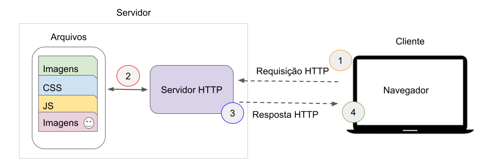

Chapter 3 Introdução à linguagem PHP
Nesta aula iniciaremos o estudo da linguagem PHP, uma das tecnologias mais utilizadas para desenvolvimento web no lado do servidor.
Até este momento da disciplina vocês trabalharam com HTML, CSS e JavaScript, tecnologias que executam diretamente no navegador. O PHP, por outro lado, é executado no servidor, permitindo criar páginas dinâmicas e aplicações web completas.
Segundo a documentação oficial da linguagem, PHP é uma linguagem de script open source amplamente utilizada e especialmente adequada para desenvolvimento web, podendo ser embutida dentro do HTML. :contentReferenceoaicite:1
3.1 Como funciona uma aplicação web
Aplicações web modernas são compostas por diferentes componentes que trabalham juntos para processar informações e entregar conteúdo ao usuário. De forma simplificada, uma aplicação web pode ser entendida como uma interação entre três elementos principais:
- Cliente
- Servidor
- Banco de dados
Cada um desses componentes possui responsabilidades específicas dentro do funcionamento do sistema.
Cliente
O cliente é o dispositivo utilizado pelo usuário para acessar a aplicação. Na maioria dos casos, o cliente é representado pelo navegador web, como Google Chrome, Firefox ou Edge.
No lado do cliente são executadas principalmente tecnologias como:
- HTML – estrutura da página;
- CSS – estilo e aparência visual;
- JavaScript – interatividade e manipulação da interface.
Essas tecnologias são responsáveis por apresentar a interface ao usuário e capturar suas ações, como clicar em botões, preencher formulários ou navegar entre páginas.
Quando o usuário realiza alguma ação que exige processamento adicional (por exemplo, enviar um formulário ou solicitar dados), o navegador envia uma requisição para o servidor.
Servidor
O servidor é responsável por receber as requisições enviadas pelo cliente, processar as informações e gerar uma resposta adequada.
No contexto desta disciplina, o processamento no servidor será realizado utilizando PHP. O código PHP é executado no servidor web (Apache, no caso do XAMPP) antes que a resposta seja enviada ao navegador.
O servidor pode realizar diversas tarefas, como:
- processar dados enviados por formulários;
- executar regras de negócio da aplicação;
- acessar bancos de dados;
- gerar conteúdo dinâmico;
- validar informações enviadas pelo usuário.
Após processar a requisição, o servidor gera uma resposta — geralmente em formato HTML — que será enviada de volta ao navegador.
Banco de dados
Muitas aplicações web precisam armazenar informações de forma persistente. Para isso, utilizam bancos de dados.
O banco de dados permite armazenar e consultar informações como:
- usuários cadastrados;
- produtos;
- pedidos;
- registros de atividades;
- conteúdos da aplicação.
Durante a execução de uma aplicação web, o servidor pode consultar ou modificar dados armazenados no banco de dados. Essas operações normalmente são realizadas por meio de comandos específicos de consulta.
Na disciplina, a integração entre PHP e banco de dados será utilizada para construir aplicações capazes de armazenar e recuperar informações.
Fluxo de funcionamento de uma aplicação web
O funcionamento básico de uma aplicação web pode ser representado pelo seguinte fluxo:

Figure 3.1: Fluxo de uma página web. Fonte: https://jesielviana.gitbook.io/guiaweb.
Esse processo ocorre de forma muito rápida e é repetido sempre que o usuário realiza alguma interação que exige processamento no servidor.
Exemplo prático
Considere uma aplicação simples de cadastro de usuários.
- O usuário acessa uma página com um formulário de cadastro.
- O usuário preenche seus dados e envia o formulário.
- O navegador envia os dados ao servidor.
- O servidor executa um script PHP para processar as informações.
- O script PHP grava os dados no banco de dados.
- O servidor retorna uma mensagem confirmando o cadastro.
- O navegador exibe o resultado ao usuário.
Nesse processo:
- o cliente envia os dados;
- o servidor processa as informações;
- o banco de dados armazena os registros.
Papel do PHP nesse processo
Dentro da arquitetura de uma aplicação web, o PHP atua como intermediário entre o cliente e o banco de dados. Ele recebe as requisições do usuário, aplica a lógica da aplicação e gera o conteúdo que será exibido no navegador.
Ao longo desta disciplina, serão explorados diferentes aspectos dessa interação, incluindo:
- criação de páginas dinâmicas em PHP;
- processamento de formulários enviados pelo usuário;
- organização da aplicação utilizando o padrão MVC;
- integração com bancos de dados para armazenamento e consulta de informações.
Compreender esse fluxo é essencial para entender como aplicações web são construídas e como diferentes tecnologias trabalham juntas para entregar funcionalidades ao usuário.
3.2 O papel do PHP no desenvolvimento web
Quando utilizamos apenas HTML, CSS e JavaScript, o navegador apenas exibe informações previamente definidas.
Com o PHP, o servidor pode:
- processar dados enviados por formulários
- acessar bancos de dados
- gerar páginas dinamicamente
- autenticar usuários
- manipular arquivos
- integrar APIs
O fluxo simplificado de uma aplicação PHP é:
Navegador → Servidor Web → Script PHP → HTML gerado → NavegadorO navegador nunca recebe o código PHP, apenas o resultado gerado por ele.
3.3 PHP embutido em HTML
Uma característica importante do PHP é a possibilidade de inserir código PHP diretamente dentro de páginas HTML.
Exemplo:
<!DOCTYPE html>
<html>
<head>
<title>Exemplo PHP</title>
</head>
<body>
<?php
echo "Olá, eu sou um script PHP!";
?>
</body>
</html>Neste exemplo:
- HTML define a estrutura da página
- PHP gera conteúdo dinamicamente
3.4 Onde o PHP pode ser utilizado
O PHP pode ser usado em três contextos principais:
Scripts executados no servidor (Server-side)
Este é o uso mais comum do PHP.
Neste caso o servidor executa o código e envia o resultado ao navegador.
3.5 Ambiente de execução
Para executar código PHP é necessário um servidor web com o interpretador PHP instalado.
Uma solução comum para ambientes de desenvolvimento é o XAMPP, que inclui:
- Apache (servidor web)
- PHP
- MySQL/MariaDB
- ferramentas administrativas
O procedimento básico para executar um script PHP é:
- iniciar o XAMPP
- iniciar o servidor Apache
- colocar os arquivos PHP na pasta:
xampp/htdocs- acessar o arquivo pelo navegador:
http://localhost/pasta/arquivo.phpDiferentemente do HTML, o arquivo não deve ser aberto diretamente no navegador, pois precisa ser processado pelo servidor.
3.6 Estrutura básica de um script PHP
Todo código PHP deve estar dentro das tags especiais:
Exemplo simples:
3.7 Variáveis em PHP
Variáveis são usadas para armazenar informações na memória durante a execução do programa.
Em PHP:
- todas as variáveis começam com
$ - não é necessário declarar o tipo da variável
Exemplo:
PHP é considerado uma linguagem fracamente tipada, pois o tipo da variável é determinado automaticamente.
3.8 Tipos de dados básicos
Alguns tipos de dados comuns em PHP incluem:
| Tipo | Exemplo |
|---|---|
| String | “Olá mundo” |
| Integer | 10 |
| Float | 10.5 |
| Boolean | true ou false |
| Array | lista de valores |
| Null | ausência de valor |
Exemplo:
3.9 Descobrindo o tipo de uma variável
Podemos utilizar funções da linguagem para identificar o tipo de uma variável.
Exemplo:
Essa função retorna o tipo da variável em tempo de execução.
3.10 Exibindo informações na tela
O comando mais utilizado para imprimir dados em PHP é:
echoExemplo:
Também podemos exibir variáveis:
3.11 Concatenação de strings
Para juntar textos e variáveis utilizamos o operador .
Exemplo:
Outra forma é utilizar aspas duplas:
Exemplo completo:
3.12 Comentários no código
Comentários são utilizados para documentar o código e facilitar sua compreensão.
Comentário de uma linha:
ou
Comentário de múltiplas linhas:
3.13 Operadores matemáticos
PHP possui operadores matemáticos semelhantes aos utilizados em outras linguagens.
| Operador | Descrição |
|---|---|
| + | soma |
| - | subtração |
| * | multiplicação |
| / | divisão |
| % | resto da divisão |
| ** | potenciação |
Exemplo:
3.15 Comparação com outras linguagens
| Conceito | C / Java | PHP |
|---|---|---|
| variável | int idade | $idade |
| imprimir | printf | echo |
| concatenação | + | . |
3.16 Boas práticas iniciais
Algumas recomendações importantes ao programar em PHP:
- utilizar nomes de variáveis descritivos
- manter o código bem indentado
- comentar trechos importantes
- separar lógica de apresentação sempre que possível
3.17 Recebendo dados do usuário em PHP
Uma das principais funcionalidades do PHP em aplicações web é receber e processar dados enviados pelo usuário, normalmente por meio de formulários HTML.
Quando um usuário preenche um formulário e clica em um botão de envio, o navegador envia essas informações para o servidor. O PHP então recebe esses dados e pode utilizá-los para realizar cálculos, armazenar informações ou gerar respostas dinâmicas.
Criando um formulário HTML
O envio de dados geralmente começa com um formulário HTML.
Exemplo:
<form method="post" action="processa.php">
Nome:
<input type="text" name="nome">
Idade:
<input type="number" name="idade">
<button type="submit">Enviar</button>
</form>Elementos importantes do formulário:
methoddefine o método de envio dos dados (GETouPOST)actiondefine qual arquivo PHP irá receber os dadosnameidentifica cada campo enviado ao servidor
Recebendo dados no PHP
No arquivo indicado no action do formulário (processa.php, por exemplo), os dados podem ser acessados utilizando variáveis superglobais do PHP.
As mais utilizadas são:
$_POST→ recebe dados enviados pelo método POST$_GET→ recebe dados enviados pela URL
Exemplo de processamento:
<?php
$nome = $_POST['nome'];
$idade = $_POST['idade'];
echo "Nome: $nome <br>";
echo "Idade: $idade";
?>Neste exemplo:
- o PHP acessa o valor do campo
nome - o PHP acessa o valor do campo
idade - os valores são exibidos na página
Exemplo completo
Arquivo index.html:
<form method="post" action="dados.php">
Nome:
<input type="text" name="nome">
Idade:
<input type="number" name="idade">
<button type="submit">Enviar</button>
</form>Arquivo dados.php:
<?php
$nome = $_POST['nome'];
$idade = $_POST['idade'];
echo "Olá $nome <br>";
echo "Sua idade é $idade";
?>Quando o usuário envia o formulário:
- o navegador envia os dados ao servidor
- o PHP recebe os dados
- o PHP executa o script
- o resultado é exibido na página
Validação básica
Antes de utilizar os dados recebidos, é importante verificar se os campos foram realmente preenchidos.
Exemplo simples:
<?php
if (empty($_POST['nome']) || empty($_POST['idade'])) {
echo "Todos os campos devem ser preenchidos.";
} else {
$nome = $_POST['nome'];
$idade = $_POST['idade'];
echo "Nome: $nome <br>";
echo "Idade: $idade";
}
?>Essa verificação evita erros quando o usuário envia o formulário com campos vazios.
3.18 Exercícios
Desenvolva os seguintes exercícios utilizando PHP.
- Construir um algoritmo que leia dois números e efetue a soma.
- Se o resultado da soma for maior que 10, apresentar o valor somado a 8.
- Caso contrário, apresentar o valor subtraído de 5.
- Ler três números diferentes e exibi-los em ordem decrescente.
- Ler:
- nome
- gênero
- idade Se a idade for maior que 25, imprimir:
Nome: ...
Gênero: ...
Você pode se cadastrarCaso contrário:
Nome: ...
Gênero: ...
Você não pode se cadastrar- Ler um número inteiro entre 1 e 12 e exibir o mês correspondente.
Exemplo:
1 → Janeiro
2 → Fevereiro
...Caso o número esteja fora do intervalo, informar que não existe mês correspondente.